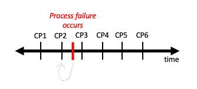

Single Node MultiGPU Training with Torchrun#
In the previous notebook we introduced parallel computing at HPC centers and a specific algorithm for distributed training with Pytorch, DDP. However, there are can be many challenges that arise when utilizing multiple computational resources. One of the biggest challenges is what happens when one of the computational resources fails during training? In this notebook we will discuss these issues and how we set up our parallel implementation to be able to continue to run despite intermittent computational resources. We will also combine the information in this tutorial and the previous tutorial and apply it to the DesignSafe Classifier we used previously.

Figure 1. Fault Tolerance
Specifically, in this tutorial, we will cover the following material:
Introduce Fault Tolerance
Introduce Pytorch’s Torchrun
Go over code modifications need to use torchrun to launch distributed code that is fault tolerant
Implement a script for training the design safe classifier using torchrun
Fault Tolerance#
Leveraging multiple GPUs to train neural networks comes with many challenges. One of the biggest is what happens when GPUs fails due to many potential issues (overheating, old system wears out, virus, etc.). Fault tolerance is the ability of a system to maintain operation despite one of its components failing. One way to combat component failure is via checkpointing. In checkpointing we periodically save the state of our application (in the case of deep learning the current weights of our model), so that if a process failure occurs we can resume our application from the previous checkpoint (See figure 2).
Figure 2. Visual of checkpointing. CP refers to a point in time when a checkpoint is saved.
Next, we will talk about torchrun, pytorch’s tools for launching distributed training that will handle fault tolerance via check pointing for you.
Using Torchrun#
Pytorch has a tool which automatically handles fault tolerance with checkpointing called torchrun. Specifically, torhcrun has he following functionalities:
worker failures are handled gracefully by restarting your workers at the previously saved checkpoint
environment variables, like RANK and WORLD_SIZE, are automatically set for you. All environment variables set by pytorch can be found here
number of nodes being leveraged can vary during training (elasticity)
In this notebook we will introduce how to utilize environment variable automatically set in torchrun as well as how to use checkpointing. We will not cover elasticity as it is outside the scope of this course. To explain the functionality of the torchrun we will:
Cover the code modifications needed using the MNIST example from the previous notebook
Explain how to launch your script.
Let’s get started.
Code Modifications with MNIST Example#
To utilize torchrun’s functionality we will need to make some changes to the distributed scaling script we created in the previous notebook. These code changes include:
Modify code for environment variables set by torchrun:
Remove code that sets environment variables as this done for you automatically with torchrun.
Instead, use these environment variables set by pytorch and instead of explicitly defining them.
Add code for writing checkpoints and resuming training after failure
Create location to store checkpoints
Read checkpoints if they exist and resume training at epoch checkpoint was written
Write checkpoints periodically during training
Remove using the mp.spawn to parallelize code and replace this with a function call, as this is done automatically by torchrun
Let’s highlight the listed code changes above by revisiting the MNIST example we used in previous notebook. In order to implement these changes only two functions need to me modified, init_distributed and main functions.
1. Modify code for environment variables set by torchrun#
In order to use the environment variables set by torchrun we will need to make modifications to both the init_distributed and main functions as highlighted in code example below. In summary, we removed the local_rank and world_size arguments from the init_distributed function and instead set these variables within the function from the environment variables set by torchrun. Additionally, we modify our main function to utilize the local_rank environment variable to set the device where our model should be stored as well as call the modified init_distributed function.
##################################################################################
# A. Remove code that sets environment variables as this done for you automatically with torchrun.
def init_distributed(): # (local_rank, world_size):
# B. Instead, use these environment variables set by pytorch and instead of explicitly defining them.
world_size = int(os.environ['WORLD_SIZE'])
local_rank = int(os.environ['LOCAL_RANK'])
torch.cuda.set_device(local_rank)
dist.init_process_group("nccl",
rank=local_rank,
world_size=world_size)
def main():
#####################################################################
# 1.B We also create the variable local_rank in our main function as well as call the new init_distributed()
# this will be used to assign the gpu where our model should reside as highlighted below
local_rank = int(os.environ['LOCAL_RANK'])
init_distributed()
################################################
# .....
# instantiate network and set to local_rank device
net = Net().to(local_rank)
2. Add code for writing checkpoints and resuming training after failure#
We need to make several modifications to the main function to incorporate writing checkpoints and resuming at a checkpoint after process failure. These modifications are highlighted below with rows of # and includes line by line comments to explain why each modification was written.
def main():
local_rank = int(os.environ['LOCAL_RANK'])
init_distributed()
train_dataloader = prepare_data()
################################################
# 2.A. Create location to store checkpoints
# Create directory for storing checkpointed model
model_folder_path = os.getcwd()+"/output_model/" # create variable for path to folder for checkpoints
os.makedirs(model_folder_path,exist_ok=True) # create directory for models if they do not exist
# create file name for checkpoint
checkpoint_file = model_folder_path+"best_model.pt" # create filename for model checkpoint
################################################
net = Net().to(local_rank)
#################################################
# 2B. Read checkpoints if they exist
if os.path.exists(checkpoint_file):
checkpoint = load_checkpoint(checkpoint_file, DEVICE) # load previous checkpoint
model.load_state_dict(checkpoint['model_state_dict']) # set model weights to be that of the last checkpoin
epoch_start = checkpoint['epoch'] # set epoch where training should resume
# otherwise we are starting training from the beginning at epoch 0
else:
epoch_start = 0
################################################
model = DDP(net,
device_ids=[local_rank], # list of gpu that model lives on
output_device=local_rank, # where to output model
)
loss_fn = torch.nn.CrossEntropyLoss()
optimizer = torch.optim.Adam(model.parameters(), lr=0.001)
save_every = 1
epochs = 10
###########################################################
# 2C. Resume training at epoch last checkpoint was written
for epoch in range(epoch_start, epochs): # note we start loop at epoch_start defined in code above
###########################################################
train_loop(rank, train_dataloader, model, loss_fn, optimizer)
###########################################################
# 2D. Write checkpoints periodically during training
if rank == 0 and epoch%save_every==0:
print(f"Epoch {epoch+1}\n-------------------------------")
torch.save({ # save model's state_dict and current epoch periodically
'epoch':epoch,
'model_state_dict':model.module.state_dict(),
}, checkpoint_file)
print("Finished saving model\n")
###########################################################
dist.destroy_process_group()
You can find the entire modified script with the changes highlighted above in the file mnist_torchrun.py. Next, we will learn how to run this script with torchrun.
Launching jobs with Torchrun#
In order to launch our new mnist_torchrun.py script you can use the torchrun command. There are several arguments that could pass with torchrun. These arguments vary based on the type of job you are launching. For example, the arguments needed for a single node job versus a multinode. For now, we will cover the arguments needs for a single node job.
Let’s start by introducing three arguments that can be helpful when launching a single node job:
–standalone : This indicates to pytorch that you are running a single machine multiworker job. It automatically sets up a rendezvous backend that is represented by a C10d TCP store on port 29400
–nnodes : Total number of nodes being used
–nproc-per-node : number of processes per node; this is typically set to the number of GPUs on your machine(s)
To launch a generic training script (YOUR_TRAINING_SCRIPT.py) on a single node with 4 GPUs you can do the following:
torchrun
--standalone
--nnodes=1
--nproc-per-node=4
YOUR_TRAINING_SCRIPT.py (--arg1 ... train script args...)
Next, let’s run our MNIST training script with torchrun:
!torchrun --nproc-per-node=4 mnist_torchrun.py
Exercise (optional)#
Modify simple linear regression script you created in previous tutorial to be able to use torchrun.
DesignSafe Classifier#
For the remainder of this notebook we will do a code walk through for the Designsafe Classifier that is setup to run on multiple GPUs with torchrun. Additionally this example will incorporate code for model evaluation. The script we create in this notebook will be used in the next tutorial where we cover multinode training. Let’s dive in!
Reused code from Part 1 and 2#
Pytorch aims to make code non-intrusive in that you can take existing code which trains a neural net on a single processer an easily scale out when hitting resource limitations with minimal code changes. With this spirit in mind, let’s first point out all the code that can be reused. Below are a set of functions and import statements that we will not need to modify that were created previously.
import sys
import os
import numpy as np
import gc
import torch
import torchvision
from torchvision import datasets, models, transforms
import torch.nn as nn
from datetime import datetime
import warnings
import shutil
# Apply transformations to our data.
# The datasets transformations are the same as the ones from part 2 of this tutorial.
def load_datasets(train_path, val_path, test_path):
val_img_transform = transforms.Compose([transforms.Resize((244,244)),
transforms.ToTensor()])
train_img_transform = transforms.Compose([transforms.AutoAugment(),
transforms.Resize((244,244)),
transforms.ToTensor()])
train_dataset = datasets.ImageFolder(train_path, transform=train_img_transform)
val_dataset = datasets.ImageFolder(val_path, transform=val_img_transform)
test_dataset = datasets.ImageFolder(test_path, transform=val_img_transform) if test_path is not None else None
return train_dataset, val_dataset, test_dataset
# Building the Neural Network
def getResNet():
resnet = models.resnet34(weights='IMAGENET1K_V1')
# Fix the conv layers parameters
for conv_param in resnet.parameters():
conv_param.require_grad = False
# get the input dimension for this layer
num_ftrs = resnet.fc.in_features
# build the new final mlp layers of network
fc = nn.Sequential(
nn.Linear(num_ftrs, num_ftrs),
nn.ReLU(),
nn.Linear(num_ftrs, 3)
)
# replace final fully connected layer
resnet.fc = fc
return resnet
# Model evaluation.
@torch.no_grad()
def eval_model(data_loader, model, loss_fn, DEVICE):
model.train(False)
model.eval()
loss, accuracy = 0.0, 0.0
n = len(data_loader)
# local_rank = int(os.environ['LOCAL_RANK'])
for i, data in enumerate(data_loader):
x,y = data
x,y = x.to(DEVICE), y.to(DEVICE)
pred = model(x)
loss += loss_fn(pred, y)/len(x)
pred_label = torch.argmax(pred, axis = 1)
accuracy += torch.sum(pred_label == y)/len(x)
return loss/n, accuracy/n
# loading checkpoint
def load_checkpoint(checkpoint_path, DEVICE):
checkpoint = torch.load(checkpoint_path, map_location=DEVICE)
return checkpoint
def load_model_fm_checkpoint(checkpoint, primitive_model):
primitive_model.load_state_dict(checkpoint['model_state_dict'])
return primitive_model
Next, let’s highlight the modifications that need to be made to scale our DesignSafe Classifier code in the following order. As a reminder below are the 8 modifications we highlighted in the this and the previous tutorial.
Serial to Parallel Modifications
Create a process group
Use Pytorch’s DistributedSampler to ensure that data passed to each GPU is different
Wrap Model with Pytorch’s DistributedDataParallel
Modify Training Loop to write model from one GPU
Close process group
Torchrun Modifications
Modify code for environment variables set by torchrun:
Remove code that sets environment variables as this done for you automatically with torchrun.
Instead, use these environment variables set by pytorch and instead of explicitly defining them.
Add code for writing checkpoints and resuming training after failure
Create location to store checkpoints
Read checkpoints if they exist and resume training at epoch checkpoint was written
Write checkpoints periodically during training
Remove using the mp.spawn to parallelize code and replace this with a function call, as this is done automatically by torchrun
Setup Process Group (1 and 6)#
Similiar to what, we say with the MNIST example, we create a function for creating the process group. This function includes modifications we made needed to use environment variables set by torchrun as well.
import torch.distributed as dist
# code from script
def init_distributed():
'''
set up process group with torchrun's environment variables
'''
dist_url = "env://"
world_size = int(os.environ['WORLD_SIZE'])
local_rank = int(os.environ['LOCAL_RANK'])
dist.init_process_group(backend="nccl", #"nccl" for using GPUs, "gloo" for using CPUs
init_method=dist_url,
world_size=world_size,
rank=local_rank)
torch.cuda.set_device(local_rank)
Create Data DistributedSampler (2)#
Next we modify the dataloader such that we are using the DistributedSampler
load data across gpus
The sampler returns a iterator over indices, which are fed into dataloader
Note that we have set up a the DistributedSampler and Dataloader for our training and validation data as well.
from torch.utils.data.distributed import DistributedSampler
def construct_dataloaders(train_set, val_set, test_set, batch_size, shuffle=True):
##########################################################################################
# 2. Use Pytorch's DistributedSampler to ensure that data passed to each GPU is different
# create distributedsampler for train, validation and test sets
train_sampler = DistributedSampler(dataset=train_set,shuffle=shuffle)
val_sampler = DistributedSampler(dataset=val_set, shuffle=False)
test_sampler = DistributedSampler(dataset=test_set, shuffle=False) if test_set is not None else None
# pass distributedsampler for train, validation and test sets into DataLoader
train_dataloader = torch.utils.data.DataLoader(train_set,batch_size=batch_size,sampler=train_sampler,num_workers=4,pin_memory=True)
val_dataloader = torch.utils.data.DataLoader(val_set,batch_size=batch_size,sampler=val_sampler,num_workers=4)
test_dataloader = torch.utils.data.DataLoader(test_aset, batch_size, sampler=test_sampler,num_workers=4) if test_set is not None else None
return train_dataloader, val_dataloader, test_dataloader
Write Checkpoints periodically during training and only from one device (4, 7C)#
Major code modifications are highlighted with comments at the end of the function below. Note, we implement checkpointing a little differently in this script. Below we save the most recent checkpoint only if it reachs a minimum validation accuracy. That way we will always have the most accurate model at the end of training.
def train(train_loader, val_loader, model, opt, scheduler, loss_fn, epochs, DEVICE, checkpoint_file, prev_best_val_acc):
n = len(train_loader)
best_val_acc = torch.tensor(0.0).cuda() if prev_best_val_acc is None else prev_best_val_acc
for epoch in range(epochs):
model.train(True)
train_loader.sampler.set_epoch(epoch)
avg_loss, val_loss, val_acc, avg_acc = 0.0, 0.0, 0.0, 0.0
start_time = datetime.now()
for x, y in train_loader:
x, y = x.to(DEVICE), y.to(DEVICE)
pred = model(x)
loss = loss_fn(pred,y)
opt.zero_grad()
loss.backward()
opt.step()
avg_loss += loss.item()/len(x)
pred_label = torch.argmax(pred, axis=1)
avg_acc += torch.sum(pred_label == y)/len(x)
val_loss, val_acc = eval_model(val_loader, model, loss_fn, DEVICE)
end_time = datetime.now()
total_time = torch.tensor((end_time-start_time).seconds).cuda()
# Learning rate reducer takes action
scheduler.step(val_loss)
avg_loss, avg_acc = avg_loss/n, avg_acc/n
###############################################################################
# 4. Modify Training Loop to write model from one GPU #####################
# 7C. Write checkpoints periodically throughout training. #####################
local_rank = int(os.environ['LOCAL_RANK'])
# Only machine rank==0 (master machine) saves the model and prints the metrics
if local_rank == 0:
# Save the best model that has the highest val accuracy
if val_acc.item() > best_val_acc.item():
print(f"\nPrev Best Val Acc: {best_val_acc} < Cur Val Acc: {val_acc}")
print("Saving the new best model...")
torch.save({
'epoch':epoch,
'machine':local_rank,
'model_state_dict':model.module.state_dict(),
'accuracy':val_acc,
'loss':val_loss
}, checkpoint_file)
best_val_acc = val_acc
print("Finished saving model\n")
# Print the metrics (should be same on all machines)
print(f"\n(Epoch {epoch+1}/{epochs}) Time: {total_time}s")
print(f"(Epoch {epoch+1}/{epochs}) Average train loss: {avg_loss}, Average train accuracy: {avg_acc}")
print(f"(Epoch {epoch+1}/{epochs}) Val loss: {val_loss}, Val accuracy: {val_acc}")
print(f"(Epoch {epoch+1}/{epochs}) Current best val acc: {best_val_acc}\n")
###############################################################################
Create Clean Up Function (5)#
This function simply closes the process group at the end of training.
def cleanup():
print("Cleaning up the distributed environment...")
dist.destroy_process_group()
print("Distributed environment has been properly closed")
Wrap Model with DDP and put everything together in main function (3, 6B, 7A, 7B)#
In the main function we wrap our model with ddp, use pytorch’s environment varaibles to specify our device, and create what’s needed to store and resume training at checkpoints.
Additionally, we report on the best model we find throughout training at the end of the script.
def main():
hp = {"lr":1e-4, "batch_size":16, "epochs":5}
train_path, val_path, test_path = "/tmp/Dataset_2/Train/", "/tmp/Dataset_2/Validation/", None
#################################################
# 6B. Use pytorch's enviornment variables. #####
local_rank = int(os.environ['LOCAL_RANK'])
#################################################
DEVICE = torch.device("cuda", local_rank)
###########################################################
# 7A. create location to store checkpoints if they exist. ##
model_folder_path = os.getcwd()+"/output_model/"
os.makedirs(model_folder_path,exist_ok=True)
###########################################################
loss_fn = nn.CrossEntropyLoss(label_smoothing=0.1).cuda()
train_set, val_set, test_set = load_datasets(train_path, val_path, test_path)
train_dataloader, val_dataloader, test_dataloader = construct_dataloaders(train_set, val_set, test_set, hp["batch_size"], True)
model = getResNet().to(DEVICE)
##########################################################################
# 3. Wrap model with DDP #################################################
model = nn.parallel.DistributedDataParallel(model, device_ids=[local_rank])
##########################################################################
opt = torch.optim.Adam(model.parameters(),lr=hp["lr"])
######################################################################################
# 7B, Read check point if it exists and pass to the train function to resume training##
prev_best_val_acc = None
checkpoint_file = model_folder_path+"best_model.pt"
if os.path.exists(checkpoint_file):
checkpoint = load_checkpoint(checkpoint_file, DEVICE)
prev_best_val_acc = checkpoint['accuracy']
model = load_model_fm_checkpoint(checkpoint,model)
epoch_start = checkpoint['epoch']
if rank == 0:
print(f"resuming training from epoch {epoch_start}")
else:
epoch_start = 0
######################################################################################
# same learning rate scheduler as part 2
scheduler = torch.optim.lr_scheduler.ReduceLROnPlateau(opt, mode='min',factor=0.1, patience=5, min_lr=1e-8, verbose=True)
train(train_dataloader, val_dataloader, model, opt, scheduler, loss_fn, hp["epochs"], DEVICE, checkpoint_file, prev_best_val_acc)
# only the node with rank 0 does the loading, evaluation and printing to avoild duplicate
if local_rank == 0:
# store and print info on the best model at the end of training
primitive_model = getResNet().to(DEVICE)
checkpoint = load_checkpoint(checkpoint_file, DEVICE)
best_model = load_model_fm_checkpoint(checkpoint,primitive_model)
loss, acc = eval_model(val_dataloader,best_model,loss_fn,DEVICE)
print(f"\nBest model (val loss: {loss}, val accuracy: {acc}) has been saved to {checkpoint_file}\n")
###############################
# 5. close process group ######
cleanup()
###############################
Finally, let’s run our designsafe classifier on a single node and 4 GPUs. Well start by copying the data that we need.
! cp -r /scratch1/07980/sli4/training/cnn_course/data/data.tar.gz /tmp/
! tar zxf /tmp/data.tar.gz -C /tmp
! ls /tmp/Dataset_2
! rm /tmp/data.tar.gz
Then, launch the job with torchrun.
!torchrun --nproc-per-node=4 torch_train_distributed.py
Summary#
In this notebook we covered the basics of how Distributed Data Parallel (DDP) works, highlighted major code modifications needed to convert a nondistributed script into a distributed training script, and made these modifications for the DesignSafe Image Classifier example. You can find the entire script created in the notebook here: torch_train_distributed.py. In the next section, we will discuss how we can launch this script to leverage a single and multiple nodes on HPC systems.
References#
https://arxiv.org/abs/2006.15704
https://pytorch.org/tutorials/beginner/ddp_series_theory.html